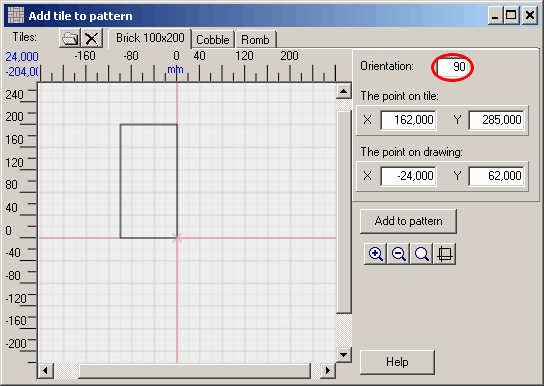

This window presents a tile that will form the pattern. Here you need to set a special point, the so-called point on the tile that will superimpose on the special point on the draft when adding the tile to the pattern. The point on the draft is set with a left click.
Note. Once set, the point on the draft could not be deleted. If the point is not set, then the reference point is used as point on the tile (reference point is marked with a violet cross).
In the right section of the window you can enter exact coordinates of the points put on the tile and the draft. The changes will occur only after you press Enter in the field where you enter value or switch elsewhere.
At the top-right corner you will also find the field that stands for orientation. Use it to rotate the tile counterclockwise round the reference point. Angles are calculated the same way it is done in geometry - starting from the horizontal axis counterclockwise. To put the tile as it is shown on the screenshot below, you will have to rotate it by 90 degrees: go to the Orientation field, fill in the value "90" and pres Enter.

Now the tile is rotated by 90 degrees around the reference point. It may also happen that the part of the tile will be out of the field of vision.
After the point and orientation are set, press the Add to pattern button. The tile will be added to the pattern. Then return to the window with a pattern, select the point for the next tile and repeat the procedure once again. If the next tile can be added using the same point and orientation, then you do not need to open the Add to pattern window, since there is an easier way to perform the action.
You can change the draft attributes with the help of the context menu. To zoom in/out and to open the mini-display, use the appropriate buttons on the right.